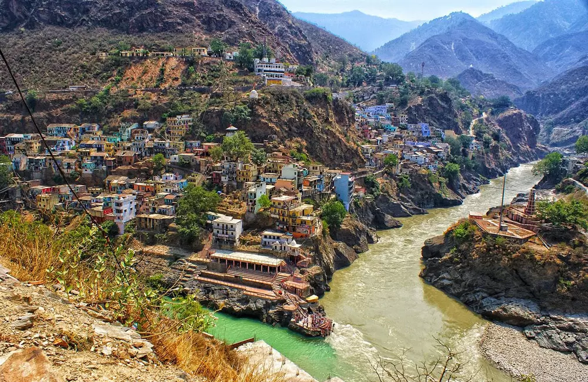
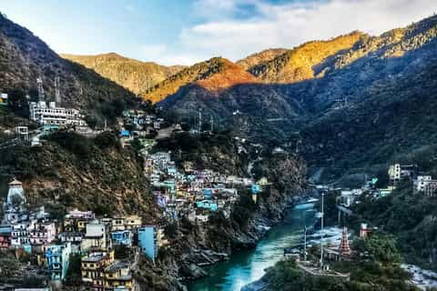
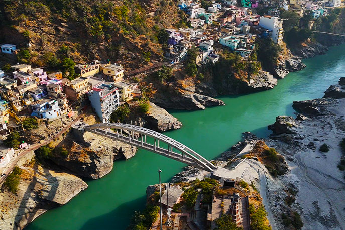
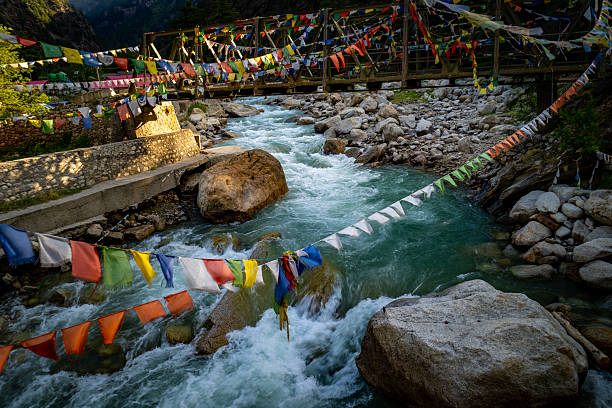

Devprayag is one of the most sacred and spiritually powerful towns in Uttarakhand, where the holy rivers Alaknanda and Bhagirathi meet to form the divine River Ganga. Nestled amidst the serene Himalayas, this ancient town is not just a geographical confluence but a place where faith, mythology, and nature unite in perfect harmony. The contrasting colors of the two rivers merging into one create a mesmerizing दृश्य, symbolizing purity, unity, and the eternal flow of life.
Steeped in deep mythological significance, Devprayag is believed to be the place where Lord Rama performed penance after defeating Ravana. The town is home to the ancient Raghunathji Temple, dedicated to Lord Rama, where devotees experience a deep sense of peace and devotion. Surrounded by mountains, ancient ghats, and traditional houses, Devprayag offers a unique blend of spiritual energy and breathtaking natural beauty — making it a must-visit destination for both pilgrims and travelers seeking inner calm.
October to March offers cool weather (10–20°C) with clear skies and peaceful surroundings, while April to June is ideal for comfortable travel and sightseeing. Avoid monsoon (July–September) due to heavy rains and rising river levels. Early mornings and sunsets are the most magical times to witness the confluence.
Sangam of Alaknanda & Bhagirathi rivers, Raghunathji Temple, sacred ghats for holy dips, Chandrabadni Temple nearby, peaceful town walks, and breathtaking viewpoints overlooking the confluence — perfect for photography, meditation, and spiritual exploration.
Wear comfortable footwear for walking on steep paths and ghats, respect local traditions and maintain silence in sacred areas, visit early morning for less crowd and better views, carry essentials as options are limited, and avoid littering to preserve the purity of this holy place.
"At Devprayag, where two sacred rivers embrace to become the Ganga, every ripple carries a story, every prayer finds its way to the divine, and the soul feels closer to something eternal and infinite."